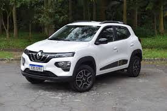

Carros econômicos

Renault Kwid
O Kwid é focado 100% em eficiência urbana e custo-benefício. Ele se destaca por ser um carro muito leve e alto em relação ao solo.
- Pontos Fortes: É muito fácil de estacionar, tem uma boa altura do solo (o que ajuda a não raspar em valetas e lombadas), vem com 4 airbags de série (um diferencial na categoria) e traz o sistema Start&Stop (que desliga o motor em semáforos para poupar combustível). O porta-malas de 290 litros é muito bom para o tamanho do carro.
- Pontos Fracos: O espaço no banco traseiro é bem apertado para adultos e o acabamento interno abusa de plásticos rígidos. O isolamento acústico na estrada deixa a desejar.
- Para quem é indicado: Ideal para quem roda muito na cidade sozinho ou em casal (trabalho, aplicativos de entrega/transporte) e busca o menor custo por quilômetro rodado.

Fiat Mobi
O Mobi é o "tanque de guerra" da Fiat para a cidade. Recentemente atualizado com o motor 1.0 Firefly de 3 cilindros (tornando-o ainda mais eficiente) e com um painel mais moderno, ele foca na robustez
- Pontos Fortes: A manutenção da Fiat é notoriamente barata e qualquer oficina mecânica conhece o carro. Ele tem uma suspensão muito valente para aguentar os buracos das ruas brasileiras e uma ótima liquidez de revenda
- Pontos Fracos: O espaço interno é o menor dos quatro, e o porta-malas é minúsculo (apenas 215 litros, mal cabe uma mala grande). O desempenho na estrada com o carro carregado exige paciência.
- Para quem é indicado: Excelente como primeiro carro, para frotas de empresas ou para quem precisa de um veículo puramente urbano e preza por mecânica simples e barata

Peugeot 208
O 208 mudou de patamar. Ele usa o mesmo motor 1.0 da Fiat (graças ao grupo Stellantis), mas entrega uma experiência de categoria superior.
- Pontos Fortes: O design é um dos mais bonitos do mercado e o acabamento interno é muito superior ao de Kwid e Mobi. A posição de dirigir (conceito i-Cockpit, com o volante menor e o painel de instrumentos em posição elevada) é elogiada pelo conforto. Na estrada, ele é muito mais estável e silencioso.
- Pontos Fracos: O preço de compra é consideravelmente mais alto que o dos subcompactos. O espaço para as pernas no banco traseiro não é dos maiores para um hatch desse porte.
- Para quem é indicado: Para quem quer a economia de um motor 1.0, mas não abre mão de tecnologia, conforto, estilo e um carro com visual mais refinado.

Chevrolet Onix
O Onix é o carro mais equilibrado e completo da lista. Ele consegue conciliar o tamanho de um hatch compacto de verdade com consumo de carro subcompacto
- Pontos Fortes: Espaço interno excelente (viajam quatro adultos com conforto) e nota máxima em segurança nos testes de colisão. O motor de 3 cilindros da Chevrolet é muito elástico, dando agilidade no trânsito, e a transmissão manual de 6 marchas ajuda a reduzir drasticamente o giro do motor e o consumo na estrada.
- Pontos Fracos: O preço das versões novas já encosta no topo da categoria dos hatches, e o seguro tende a ser um pouco mais caro por ser um dos carros mais vendidos (e visados) do país.
- Para quem é indicado: Perfeito para famílias pequenas, para quem viaja com frequência ou para quem precisa de um carro único que dê conta tanto do trânsito urbano quanto de viagens longas com bagagem.